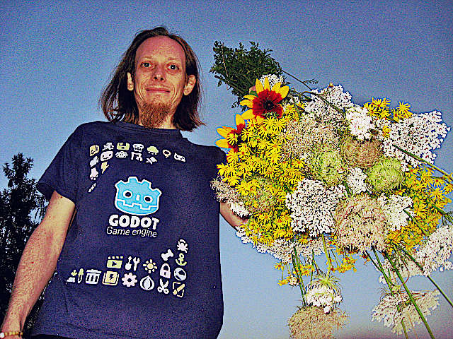

Personal Home Page , The 2025.01 Edition

Krzysztof Krystian Jankowski
Known as w84death
> Cyfrowy Nomada and P1X Founder.beffio .code . Assembly, C, Pascal, JavaScript, Python, Lua. digital art . Pixel Art & 3D.
Important Links
fosstodon GitHub smol.p1x.in
kj@p1x.in
Jump to
Featured Projects
Experience Summary
Career Milestones
Connected Pages
Social Media
Featured Projects
Tanks of Freedom
One of the biggest games made in the early years of Godot. Started at Global Game Jam with P1X team.
Thanks to many contributors it is multi-language and included in many
system repositories (Linux, FreeBSD, Pandora, Flatpack, F-Droid).
Our biggest, most complex, and most recognizable game.
Over 39000 downloads (only itch.io)
1959 commits
938 stars, 136 forks at GitHub
Supports 7 languages
ToF Homepage
itch.io
GitHub
FLOPPINUX
I love floppies. I made my own Linux distribution that runs from just one 1.44MB floppy!
The blog post got to the front page of Hacker News. Was reviewed by Hackaday and Adafruit.
My most successful writing yet. Many people read it and made their own variants.
152 pints, 85 comments on Hacker News
38 reblogs, 86 boosts, many comments on Mastodon
161 stars, 11 forks at GitHub
FLOPPINUX Homepage
GitHub
smolOS
smolOS - a tiny and simple operating system for MicroPython giving the user POSIX-like environment to play
Changes tiny microcontroller into a small working PC
Targetting ESP8266 and RP2040 boards
Easy to use, simillar to MS-DOS, POSIX-like environments
41 stars at GitHub
smolOS Homepage
GitHub
Experience Summary
I started programming as a kid on a Intel 486 PC . It was DOS and QBASIC . Since then I made insane amount of projects related to Computer Graphics and Programming.
I'm a Professional Game Developer and Producer . Thanks to years of experience in game and IT industry I know how to create and handle small to big projects.
I manage the whole process of product design and
development. From estimating the cost and man power need to delivery
final product on time.
I code mostly in Python and Assembly, model in Blender, and hack with AIs.
Summary (Years)
025+ Programmer
015+ HTML5 Web Developer
012+ Self-hosting DevOps
011+ Indie Game Developer
010+ Senior Front-end Developer
009+ Pixel Art Artist
006+ 3D Generalist
006+ Senior Game Developer
004+ Senior Project Manager
003+ Senior Producer
Career Milestones
2013
Created Piradice a turn-based game from scratch in pure JavaScript.
Created humorous and irrational game Office People for Firefox OS .
2014
2015
2017
Created educational game You Will Type in JS.
Created arcade game Vostok with P1X Team. Shown on trade shows.
2018
2019
Started using Blender 2.80 .
Trip to Tenerife of the Canary Islands.
2020
Founded Cyfrowy Nomada .
Joined beffio .
Ported City Adventure to Unreal Engine 4 with physics-based traffic using Blueprints .
Created prototype FPP game The Complex Project in Godot using Qodot plugin. Levels made in TrenchBroom.
2021
Create game engine from scratch in WebGL/ThreeJS for Carolina Herrera 212 game . I was also managing that project.
Started managing projects at beffio.
Created my first Linux Distribution called FLOPPINNUX that fits on 1.44MB floppy.
A simple, zen like puzzle game GreenWay with P1X Team in 48h GameJam.
Created interactive fiction game in BASIC/DOS powered by my SDGI engine.
First NFT sold!
2022
2023
Become a Producer at beffio beffio
Started dusing self-hosted Stable Diffusion using automatic1111's WebUI
Created blog where I publish AI related stuff at bits-next.p1x.in
Incorporated ChatGPT for fast prototyping (programming)
Started training own models for Stable Diffusion using DreamBooth
Become a Prompt Engineer and start teaching others how to talk with AI
Created retro gaming Stable Diffusion models available at Civitai
Created demo tool for my future 64KB demoscene demos (C++, GLSL)
Started using LLaMA models for own Assistant written in Python
Created tool for reading (audio) notifications from Mastodon (Python)
Created tool for extracting ghost blog data into static HTML page (Python)
Started using MicroPython for my microcontrollers
Created smolOS a tiny operating system for ESP8266/RP2040 (MicroPython)
Started using Windows 2000 retro computer for demo development
(Delphi 7 ) and web pages editing (Front Page 2000 )
Created demo tool Bad Looking Cube for Delphi and OpenGL demoscene
demos (Object-Pascal)
2024
Started recreating all my web pages after the Grate Server Failure
Created BBS Server P1XArion using MysticBBS
Created personal computer MonciaPC , powered by 8-bit Arduino Uno,
with dedicated MonciaOS system
Learned OpenAI API and made VisionVerse tool
Made retro CGI graphics in Bryce 3D
Started using Whisper locally for secure transcripts from calls
Getting into x86 Assembly, 16-bit, programming
Created 512 bytes sized games for bootsector: Land Me and Fly Escape in Assembly
Finished Harvard course "Introduction to the Artificial Intelligence"
Created another 512 bytes bootsector game Bit of a Treasure in Assembly
Created 512 bytes DOS game for mouse input Moth Hunter in Assembly
Archived Computer Scene articles from CD-Action magazine (1996-2001).
Created KBD a Typing Exercise game
Created Mysteries of the Forgotten Isles a bare-metal bootloader (512b) and a game in 5KB that runs on BIOS both in Assembly
Created HEXView smol HEX Dump Viewer and ASMView smol ASM Viewer
Created SpaceSnakes Love2D visual experiment
Created Gen Maczek AI Card Game where backend and narration is handle byollama LLM
2025
Connected Pages
Professional Work
Cyfrowy Nomada Company Page
beffio Realtime 3D Graphics
GitHub
all the code
Personal
Writing & Projects
smol - Personal web log 2023-current
Bits - Compressed Bits Of Useful Information 2018-2022 archive
Old personal weblog 2016-2018 archive
Talks (audio)
Indie Game Development
P1X Indie Game Development Studio
itch.io P1X games at itch.io
github.com all games code at GitHub
Report The game industry of Poland Report
Homelab Resources
IBM ServerX
ESP8266
Friends
Dzierżymir Jankowski
Monika Trenerowska
CzlowiekImadlo
Fosstodon [view on brutaldon.org]
Twitter [archive, moved to Mastodon]
GitHub
ArtStation
Soundcloud
Vimeo
Steam
Support
Buy P1X games
Donate using Liberapay
©2025 by Krzysztof Krystian Jankowski & Cyfrowy Nomada